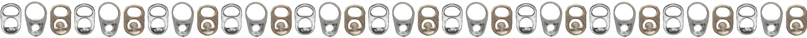

“An Absolute Embarrassment of Pop Tabs”

THE WORLDS LARGEST COLLECTION OF POP TABSThey call me the Tab Bastard for a reason.
I've been building the worlds largest collection of can tabs for over two decades.
I've hunted down, collected and archived every kind of pull tab I could get my hands on.
Boy did my hands get dirty!
I've built what may one day be recognized as
The Guinness World Record Largest Collection of Pop Tabs.
But this isn't just the world's largest pile of soda pop tabs that you've never seen.
This is something bigger and better
Since the turn of the century, I've been crushing empty cans and only keeping the rarest of Pop Tabs, Can Tabs. Pull Tabs. Soda Tabs. Ring Pulls. Juice Tabs. Stay-Tabs. Zip Tops. U-Tabs
What I've compiled might just be…
The Most Complete & Comprehensive Compendium of Curated & Catalogued Can Tabs Ever Collected This Century
A globally sourced archive of taxonomically organized aluminum beverage stay-on tabs — meticulously sorted by every size, shape, color, brand, and design variation.
All aluminum. All tabulated. Yours truly — The TaBastard.
This record-breaking collection spans all five decades of pull tab history:
It's packed full of modern "Stay-on-Tab" from everyday energy drinks, imported beers and rare vintage soda cans to the ultra-rare, mythical, one-of-a-kind pull tabs your grandpa probably tossed out. Soda pop can tabs so obscure they don't exist in any known record. I've sorted and polished every damn pop tab color under the anodized aluminum rainbow.
Yes! ALL the colors
I even found the mythical "brown" pull tab.
it's real, it's glorious, and I've got one.
Once upon a pop tab in 2008, I had amassed every common tab on the market, I even thought I'd collected them all…
But, like that Pokémon kid learned:
"Ya ain't never gonna catch 'em all."
Pull tab collecting is a game that never ends — a labor of love only a true tab addict can understand.
I'll be tab huntin' tabs until the day I tab-out. 💀
So this bastard of a tab collection just keeps growing…
Because somewhere out there — on a can far, far away (or just around corner shop) there's always another can tab waiting to be popped.
“Drinks Drank, Cans Crushed, Tabs Taken”
~Yours truly, TaBastard
#DrinkDifferent #StayPopped #GetTabs